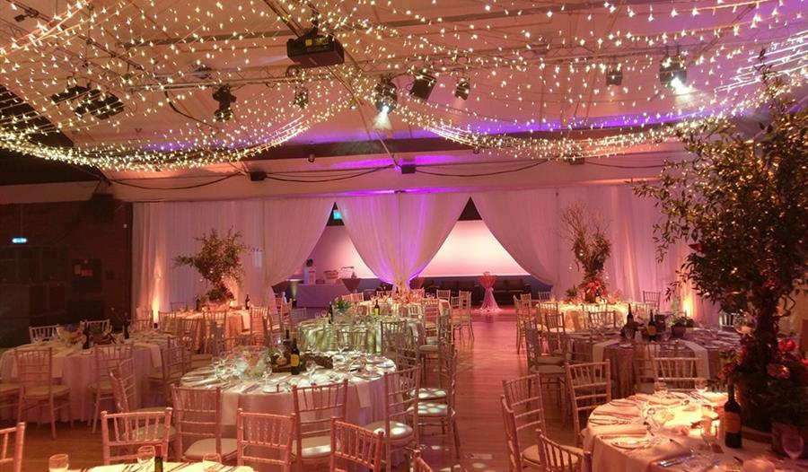
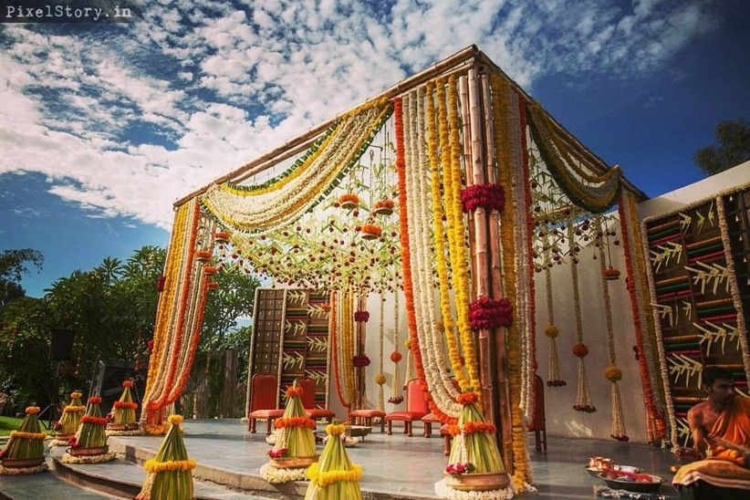
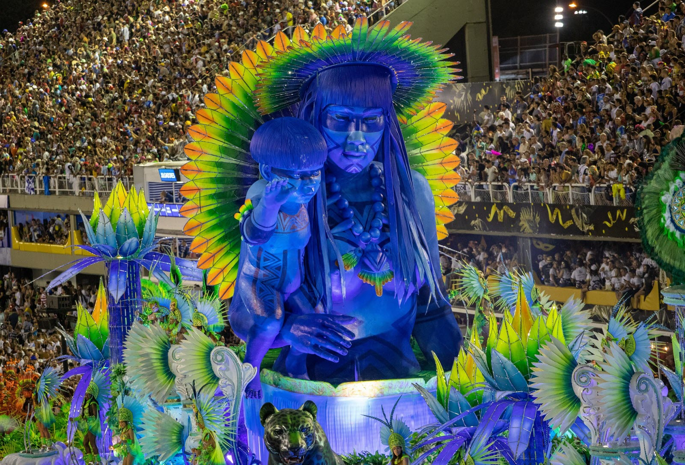
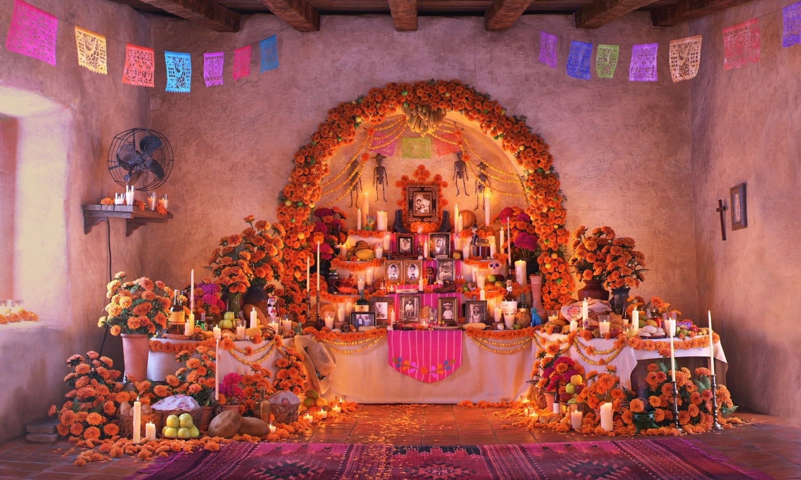
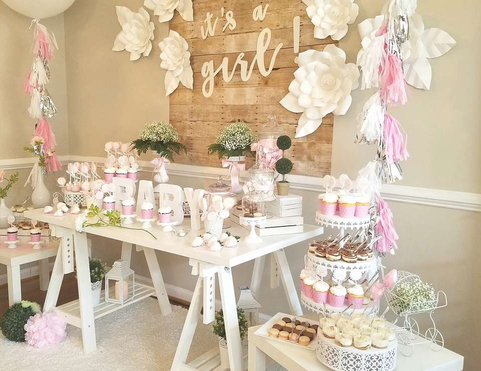

Galerie présentant différents styles de décoration événementielle à travers le monde



Car l’amour c’est savoir faire le grand saut décoration d’une demande d’engagement





Car l’amour c’est savoir faire le grand saut décoration d’une demande d’engagement

